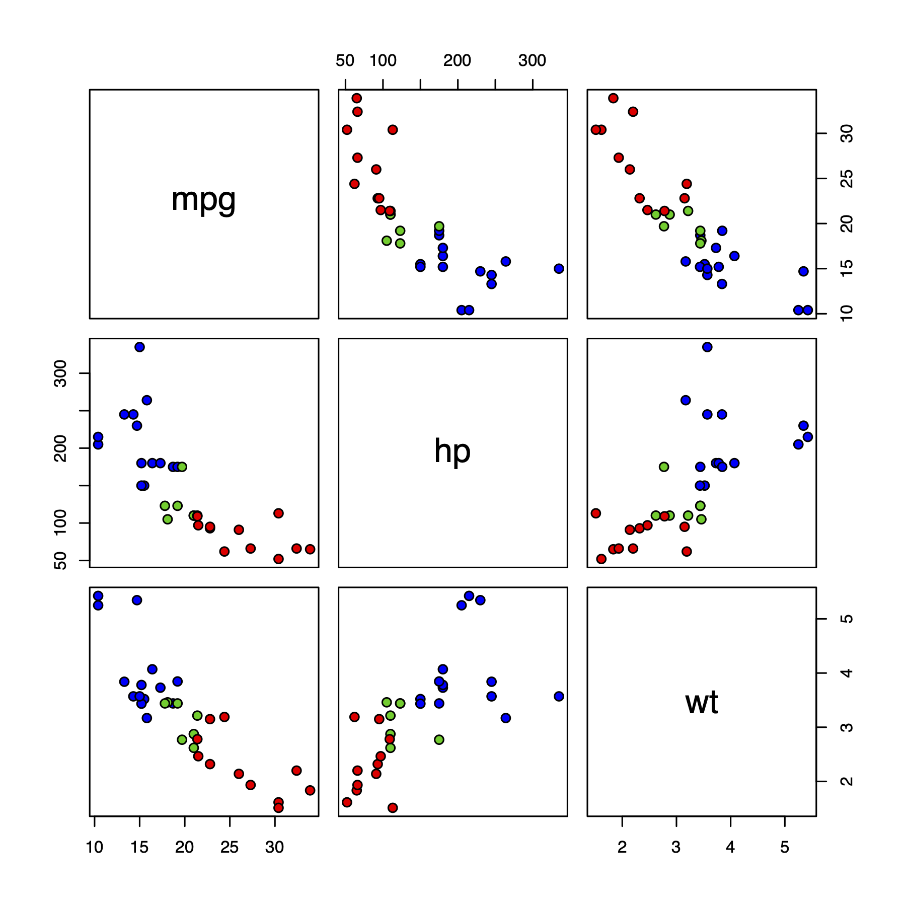
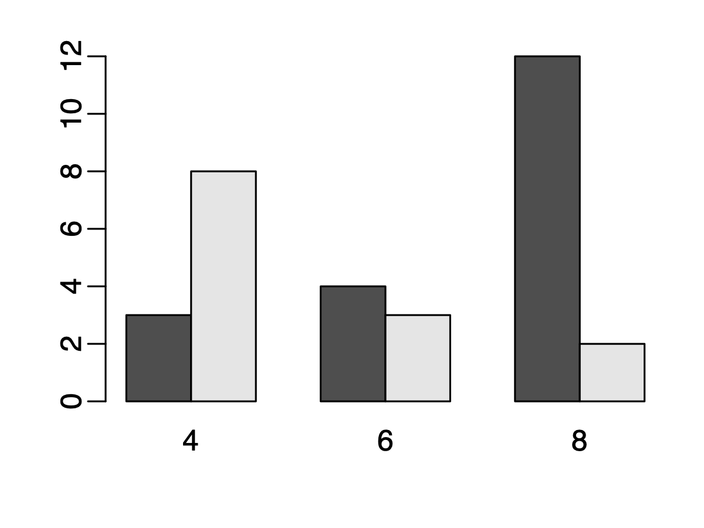

Prepare a single file homework5.Rmd, which should include all answers, R codes, and result figures. Note: DO NOT generate and save figures, and then insert into Rmd. Make your Rmd dynamic, meaning that it will automatically generate and insert figures when you knit the Rmd.
This question explores the relationship among multiple continuous variables.
Explain the difference between covariance and correlation, in your own words.
Run following codes to generate some random numbers. Draw the
scatter plot between x and y, and
x and y2. Compute the covariance and
correlation for each comparison. Explain what you see in the figure and
what the numbers (covariance and correlation) mean.
x = rnorm(100)
y = 0.5*x + rnorm(100)
y2 = 2*x + rnorm(100)Run following codes to generate some random numbers. Draw the
scatter plot between x and y. Compute the
covariance and correlation. Explain what you see in the figure and what
the numbers mean.
x = rnorm(100)
y = x^2 + rnorm(100, sd=0.5)Generate the pairwise scatter plot, using pairs
function, for the mpg, hp, and wt
variables in the mtcars data frame. Also compute the
pairwise correlation among these 3 variables. Explain what you see in
the figure, and the meanings of the numbers.
For the above pairwise scatter plot, use different colors for
cars with different cyl. Hint: you need to
adjust the bg parameters in the function. Look at the first
example for the paris function. I expect to see a figure
similar to the following:

This question explores the relationship among multiple categorical variables.
mtcars data frame, generate the contingency
table between transmission type (am) and number of
cylinders (cyl).
Explain your observations from the table and figure, using plain language.
Bonus point: Compute the odds
ratio of am and cyl between cars with
4 and 8 cylinders. Can you explain the meaning of the odds
ratio?
This question explores the relationship among continuous and categorical variables.
mtcars, write a loop to compute the mean
hp for cars with different am.aggregate function to repeat the above.am have similar hp. Use plain language to
explain the results.Write an R function named myRowSums to compute and
return the sums of all the rows in a matrix. Use the following codes to
generate data and verify the results. NOTE: you cannot
call rowSums function in your function. Write a loop.
x = matrix(1:12, nrow=4)
rowSums(x)
myRowSums(x) ## should get the same resultsWrite an R function to compute the root of a quadratic function ax^2+bx+c=0.
quadroot.quadroot(a=1, b=0, c=0, plot=FALSE). If the users
specify plot=TRUE, generate a figure to show the curve of
the function. For that, the easiest way is to generate some x values and
then plot x vs the function value.Perform a simple linear regression to explore the relationship
between wt and mpg in the mtcars.
Provide a figure (scatterplot with regression line) to show the results.
Explain in plain lanuage what the results mean (e.g., the meanings of
regression coefficients).
This week, we will learn some concept and techniques to assess the relationships among multiple variables (continuous or categorical). Today we will focus on the relationsip among continuous data.
cov and cor
for computing covariance and correlation.pairs function, for
generating pairwise scatter plot.To assess the relationship among multiple categorical data:
table function, which can be used to
generate the contingency table.To assess the relationship among continous and categorical data:
aggregate function, play with and
understand the examples. Read a more
detailed explanation.t.test
function in R. The above link contains content we haven’t talked
about, such as density plot and qqplot. Ignore those if it’s difficult
to understand.Understand the concept of regression analysis. Read https://en.wikipedia.org/wiki/Regression_analysis, the opening section and the History section.
Understand simple linear regression. Read https://online.stat.psu.edu/stat462/node/79/, sections 2.1, 2.2, 2.3, and 2.9.
Learn how to use the lm function in R to do linear
regression: https://www.scribbr.com/statistics/simple-linear-regression/.
There are lots tutorials online. I found the above link to be the
easiest to read. You can also look for others if needed.
Do question 6 in the homework.
Review the contents in days 1, 2, and 4. These are very important
statistical concept, and lay foundation for further more advanced
statistical and data analytical methods (such as machine learning). When
I say review, you need to read the links again. Don’t be
lazy.
Finish the homework.